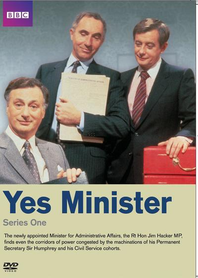
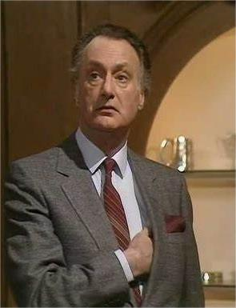
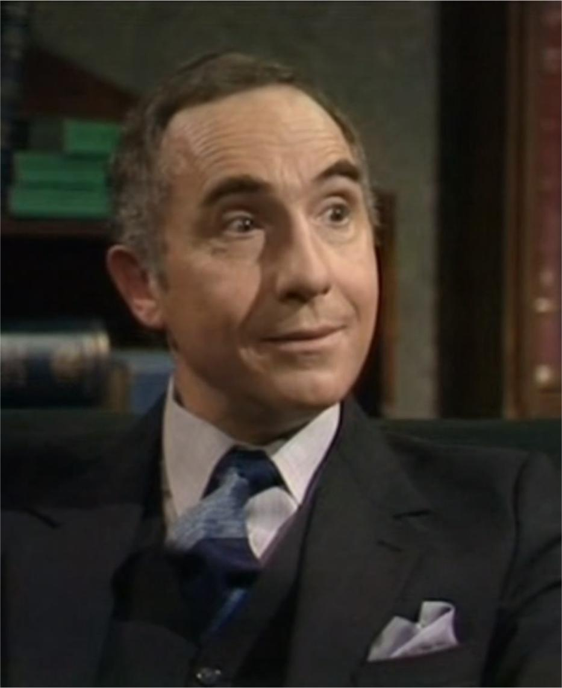
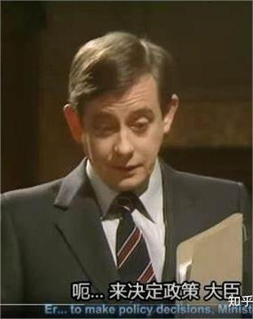

| 收藏 | 123 | 点赞 | 456 | 转发 | 789 |
|---|
《是，大臣》是由西德尼·洛特比、彼得·惠特莫尔执导，乔纳森·林恩、安东尼·杰伊编剧，保罗·爱丁顿、奈杰尔·霍桑、德里克·福德斯领衔主演的政治题材情景喜剧。于1980年2月25日起在英国广播公司二台播出。
作品以喜剧的方式讲述了新任行政大臣吉姆·哈克在白厅内与部门内事务官斗争与合作的故事。
新任命的行政事务部内阁大臣的吉姆·哈克有很多致力于公开改革的想法与主意。而这些主意却遭到负责贯彻执行政策的事务官们，尤其是他的常务次长——汉弗莱·阿普比爵士的反对。在永远乐于助人的伯纳德的帮助下，哈克和汉弗莱爵士继续在行政事务部里推进自己的议程，在这期间，哈克经历了与工会斗争、收到死亡威胁以及接受特别委员会的质询等事情。
| 类型 | 喜剧 | 导演 | 西德尼·洛特比、彼得·惠特莫尔 |
|---|---|---|---|
| 首播时间 | 1980年2月25日 | 中文名 | 是，大臣 |

基本信息
| 中文名 | 是，大臣 | 主演 | 保罗·爱丁顿、奈杰尔·霍桑、德里克·福德斯 |
|---|---|---|---|
| 外文名 | Yes, Minister | 集数 | 22集 |
| 出品公司 | 英国广播公司 | 每集长度 | 30 分钟 |
| 导演 | 西德尼·洛特比、彼得·惠特莫尔 | 编剧 | 乔纳森·林恩、安东尼·杰伊 |
演员介绍

吉姆·哈克
演员 保罗·爱丁顿
行政事务部大臣。吉姆是一个仁慈却有些笨拙的人。当选国会议员后，他被任命为行政事务的大臣。然而，他并不擅长使用政治权力，因此他经常只能将政策的执行停留在理论层面。但是，他通过采用他人绝妙的构思，偶尔也能获得一两次成功。

汉弗莱·阿普比
演员 奈杰尔·霍桑
行政事务部常务次长。在三十多年的事务官生涯，汉弗莱不仅获得了骑士勋章，还通过努力成为了行政事务部里的首脑。他虽然是表面上的常务次长，然而，他除了阻止政务官行使任何权力以及确保事务官系统的地位之外，并没有什么立场。

伯纳德·伍列
演员 德里克·福德斯
行政事务部公派私人秘书。他常常去纠正错用的暗喻和习语，因此他迅速步步高升，成为行政事务部的首席私人秘书，得以掌管独立的办公室。但他也对担任高级职务没有什么经验，于是一开始，他常常产生自我矛盾——使用权力时，不知道是该先忠于大臣还是先忠于事务官体系。